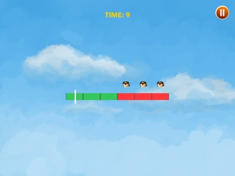
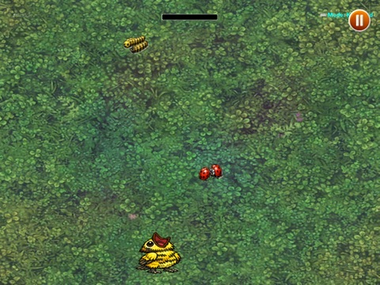
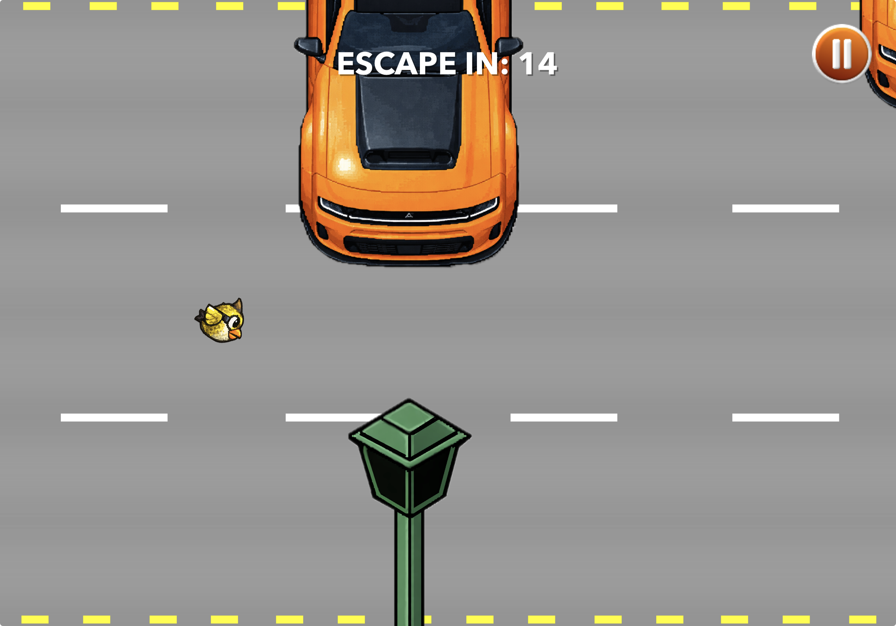

Take Flight — A Bird's Life
A SpriteKit survival game for iPad and macOS with full keyboard support, where players build a nest, protect their flock, and escape Belle Isle through connected mini-games.
Demo Video
Demo video: Take Flight gameplay walkthrough.
Problem
Many game prototypes have fun mechanics but weak continuity between interactions. This project focused on creating a connected survival loop where each mini-game affects player state and long-term progression.
Project Snapshot
- Platform: iPadOS + macOS (SpriteKit)
- Type: Narrative survival game
- Focus: Multi-mode gameplay loop, persistence, controller/input support
- Input: Full keyboard compatibility, plus touch and motion where applicable
- Team: Small collaboration
- Timeline: Jan 12, 2026 - Feb 20, 2026
Role
Gameplay engineer and designer responsible for SwiftUI + SpriteKit architecture, scene systems, mini-game mechanics, and persistence/Game Center integration.
My Contributions
- Implemented the root app flow between main menu and game using a state-driven SwiftUI coordinator
- Built major SpriteKit mini-game logic, including predator timing, feed loops, and escape-state handling
- Integrated persistence for game/session state and resume behavior with SwiftData models
- Connected Game Center authentication and achievement reporting into gameplay milestones
- Designed onboarding/instruction gating so tutorial prompts appear contextually without interrupting flow
Constraints
Ship five distinct mini-games in a short development window while maintaining input consistency, understandable controls, and smooth transitions across iPad and macOS.
Key Decisions
- Built a root SwiftUI coordinator (`menu` / `game`) for clean state transitions and replayability
- Used SwiftData models (`GameState`, `GameSettings`) to persist progress, inventory, and player state
- Implemented a central view model to coordinate HUD, tutorials, mini-game flow, and world scene updates
- Created instruction gating so tutorials appear contextually once, then get out of the player’s way
Core Features
- Five mini-games with unique mechanics: predator escape timing, nest-building memory drag/drop, self-feeding catch system, rope-cut baby feeding, and Flappy-style island escape
- Multi-input support including keyboard, touch, and tilt modes where relevant
- Persistent inventory and score systems tied to in-world objectives
- Haptics/audio feedback layers for success, danger, and state transitions
- Game Center achievements integration for milestone progression
Technical Highlights
- SpriteKit scene composition split into focused files (player, camera, map, predators, nest, updates) for maintainability
- Physics-based mini-game interactions (rope links, falling items, contact categories) tuned for responsiveness
- State-safe mini-game pausing and resuming during instructional overlays
- Dynamic menu behavior with resume/new game paths based on persisted save state
Code Highlights
SwiftData persistence model: game state was modeled to persist world position, progression flags, inventory, and baby-bird lifecycle across sessions.
@Model
final class GameState {
var id: UUID
var birdXPos: Double
var birdYPos: Double
var birdZPos: Double
var hasNest: Bool
var hasFedBabyBird: Bool
var hasEscapedIsland: Bool
var hungerLevel: Double
var inventoryFood: Int
var babyBirdHungerLevel: Double
var hasBabyBird: Bool
var hasHatchedBabyBird: Bool
init(
id: UUID = UUID(),
birdXPos: Double = 0,
birdYPos: Double = 0,
birdZPos: Double = 0,
hasNest: Bool = false,
hasFedBabyBird: Bool = false,
hasEscapedIsland: Bool = false,
hungerLevel: Double = 100,
inventoryFood: Int = 0,
babyBirdHungerLevel: Double = 100,
hasBabyBird: Bool = false,
hasHatchedBabyBird: Bool = false
) {
self.id = id
self.birdXPos = birdXPos
self.birdYPos = birdYPos
self.birdZPos = birdZPos
self.hasNest = hasNest
self.hasFedBabyBird = hasFedBabyBird
self.hasEscapedIsland = hasEscapedIsland
self.hungerLevel = hungerLevel
self.inventoryFood = inventoryFood
self.babyBirdHungerLevel = babyBirdHungerLevel
self.hasBabyBird = hasBabyBird
self.hasHatchedBabyBird = hasHatchedBabyBird
}
}Main update loop orchestration: each frame applies survival decay, persists state at intervals, and routes proximity interactions into mini-game transitions.
func update(currentTime: TimeInterval) {
if isPausedForMiniGame { return }
let deltaTime = (lastUpdateTime == 0) ? 0 : currentTime - lastUpdateTime
lastUpdateTime = currentTime
timeSinceLastSave += deltaTime
if timeSinceLastSave >= saveInterval {
saveCurrentState()
timeSinceLastSave = 0
}
decreaseHealthOverTime(deltaTime: deltaTime)
if !isInInteractionRange,
let player = cameraNode.childNode(withName: "//player") {
checkProximityToNestAndPredator(playerNode: player)
}
if isNearNest { handleNestInteraction() }
if isNearPredator {
isNearPredator = false
startFlyAwayMiniGame()
}
checkForFoodCollection()
}Key Screens
Key screens: Nest-building, predator, feed, and island-escape mini-game moments from the shipped build.

Build Nest mini-game where players assemble materials under pressure to unlock core progression.

Predator mini-game where players react quickly to evade threats and preserve survival state.

Feed mini-game focused on timing and resource collection to maintain hunger and progression.

Leave Island mini-game sequence where players complete the final escape challenge.
Outcome
The final build delivers a cohesive survival experience rather than disconnected mini-games. It demonstrates system-level thinking, robust scene orchestration, and practical game architecture choices in SwiftUI + SpriteKit.
Next Iteration
Next improvements would include adaptive difficulty scaling, expanded narrative beats between milestones, and richer telemetry for balancing challenge pacing across input modes.